{kind=link}
def train(images, labels):
""" Train a Model """
# Fit Model here
return model
def predict(test_images, model):
""" Predict """
predictions = model(test_images)
return predictions1 - Introduction
Motivation
Deep Learning models have played a transformative role in Computer Vision over the last decade, significantly enhancing and expanding the capabilities to process visual data.
The integration of Deep Learning in Computer Vision has massively improved the accuracy and efficiency of visual recognition, classification, and analysis. This has opened up new possibilities in applications such as automated driving, facial recognition, and medical image analysis. These models are now embedded in a wide variety of products and services.
Biologists might need to analyse images from camera traps for species identification, see Figure 1.

Recent advances in generative deep learning enables anybody to create realistic looking synthetic images (see Figure 2). This can be used for many applications, positive and negative. Such images might be used to create misinformation which is one reason researchers are trying to build models to detect them.
Figure 3 shows an application where one can take a photo of an object of interest and let a model identify it, as well as search additional information about it. Photos can also be used for translation tasks whereby models detect letters (optical character recognition) and then translate it (using language models).

One area with high commercial interest and high competition is the development of self-driving capabilities. Figure 4 shows a demonstration of the capabilities required towards self-driving, such as understanding a scene and identifying any objects in it.
Face recognition rechnology, such as Apple’s Face ID (Figure 5), has become ubiquitious. In this case depth information is derived from infrared light.
Computer vision has also been very useful in agricultur. Figure 6 shows an application where apples can be counted from image data. Furthermore, drones might be used to estimate crop yield, type and health.

Deep learning has also been applied extensively in the medical area. In particular, many imaging technologies, such as MRI or CT, can be analysed with computer vision techniques. Figure 7 illustrates a generic segmentation model which can be used to identify organs and other anatomical structures on pixel-level.

Photo-editing has been brought to new levels of sophistication with AI-based capabilities. Figure 8 shows an impressive example from the Google Magic Editor. Maybe even a bit too good?
Question
What steps do you think the model in Figure 8 performs?
The increasingly better models and the ability to run them quickly and resource-efficiently on mobile devices have enabled such applications. Figure 9 shows that special chips have been developed to process images with Deep Learning models quickly.

Computer Vision Tasks
Image Classification
In image classification, an image is assigned to a predefined set of classes. In multi-class classification, there are \(\gt 2\) classes; in binary classification, there are 2 classes; and in multi-label classification, there are multiple sets of classes. Figure 10 shows an example from the paper by Krizhevsky, Sutskever, and Hinton (2012) (multi-class classification), which achieved the best results in the ImageNet competition in 2012 and demonstrated the effectiveness of CNNs.

Object Detection
Object detection involves locating and recognizing (multiple) objects in an image. Figure 11 shows an example from the paper by Redmon et al. (2016). Each object is localized with a bounding box and assigned an object class.

Segmentation
In segmentation, individual pixels are assigned to specific objects (instance segmentation) or classes (semantic segmentation). Figure 12 shows an example of object segmentation (instance segmentation) from the paper by He et al. (2018), where individual objects are detected and precisely localized (segmented) at the pixel level.
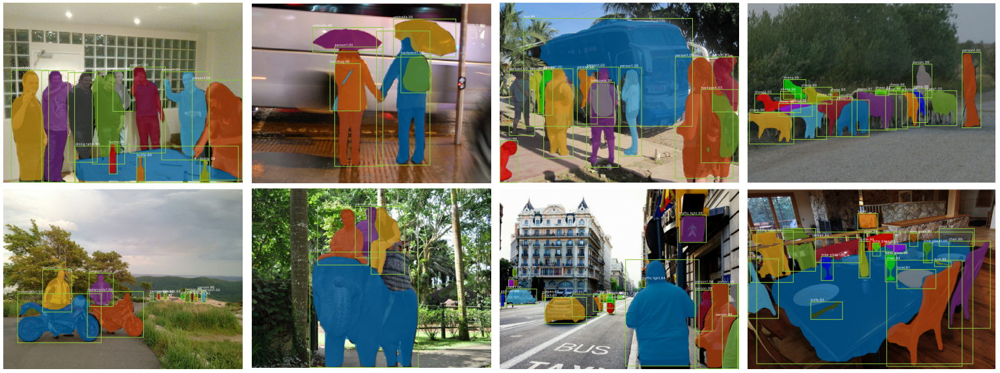
The following video shows an example of semantic segmentation:
Keypoint Detection
In keypoint detection, keypoints of people are localized. People must be detected and their keypoints (joints) localized. Figure 13 shows an example of keypoint detection from the paper by He et al. (2018), where
individual people are detected and their joints localized. This can be used to transfer movements from a person to an avatar or to recognize activities of people (action recognition).
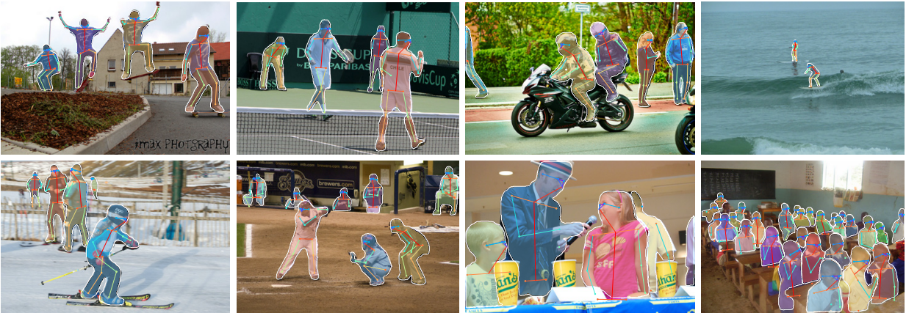
Image Generation
There are various applications where models transform input images into specific output images (image-to-image or image translation) or generate completely new images (image generation). Below some example applications.
Image Manipulation
Image Translation
Figure 15 shows an example of image generation from the paper by Isola et al. (2018), where images are generated conditioned on image inputs (translated). This can be used, for example, to convert a sketch of an object into a photorealistic depiction of it.

Image Super Resolution
In the gaming industry, Deep Learning is used to generate high-resolution images, scaling low-resolution images efficiently (image super resolution), as shown in Figure 16. This allows for higher frame rates.

Image Colorization
Image colorization can be learned with Deep Learning. This involves transforming a black-and-white image into an RGB image. Figure 17 shows an example.

View Synthesis
In view synthesis, views of certain scenes are generated from models. Neural Radiance Fields (NeRFs) are simple models that can generate new views from known viewpoints and their images. Figure 18 shows the data on which such a model is trained and what can be generated with it.

Unconditional Generation
In unconditional image generation, data (images) are generated that resemble those in the training data. Here, you have no direct control over the model’s output. However, you can often make changes to generated images or interpolate between data points. Figure 19 shows generated images from a model trained on portrait images of people.
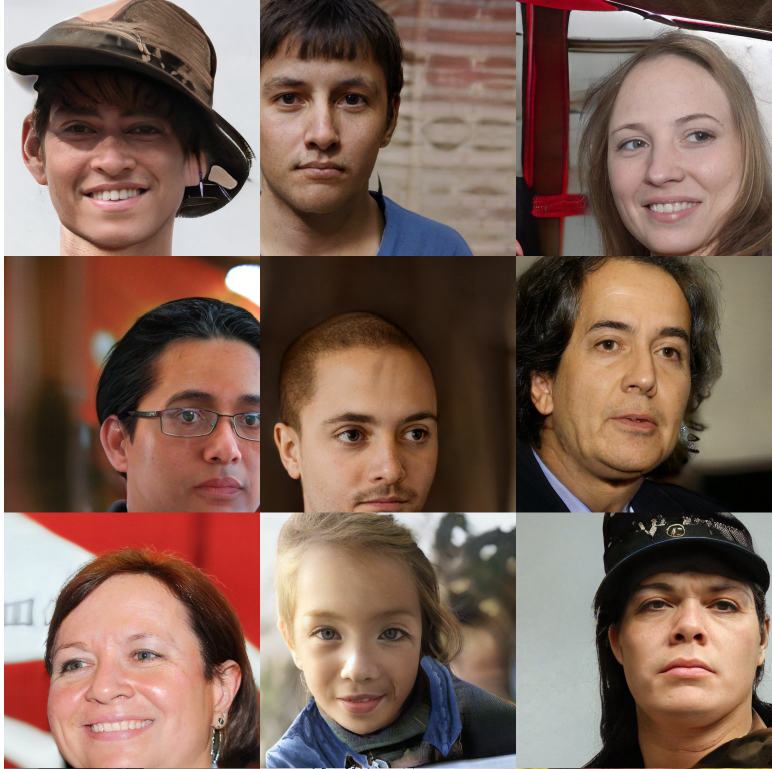
Text to Image
Figure 20 shows an example of image generation from the paper by Rombach et al. (2022), where images are generated conditioned on text inputs.

On civitai, there are numerous examples and models to admire or download.
Further tasks
There are many more computer vision tasks. The following list is not exhaustive:
- Image Classification
- Object Detection (and Tracking)
- Image Segmentation
- Semantic Segmentation
- Instance Segmentation
- Optical Character Recognition (OCR)
- Pose Estimation
- Facial Recognition
- Action Recognition
- Image Generation
- Style Transfer
- Image Inpainting
- Super-Resolution
- Text-to-Image (and more)
- Image Captioning
- 3D Reconstruction
- Image Retrieval
Challenges
We will now explore some challenges that must be overcome when analyzing images with machine learning models.
Semantic Gap
The semantic gap refers to the discrepancy between low-level information that can be extracted from an image and the interpretation of an image by a viewer. Simply put: an image often consists of millions of pixels whose information must be condensed to ultimately derive semantically meaningful information. This is an extremely complex task.

Viewpoint
The meaning of the image does not change with the viewpoint, but the pixels do.

Deformation
Objects are often flexible and appear in different shapes and poses.

Illumination
Changes in illumination affect pixel values and the visibility of objects.

Background
Background pixels can resemble objects and make their exact delineation or visibility more difficult.

Occlusion
Objects are not always fully visible, which can make their detection more difficult.
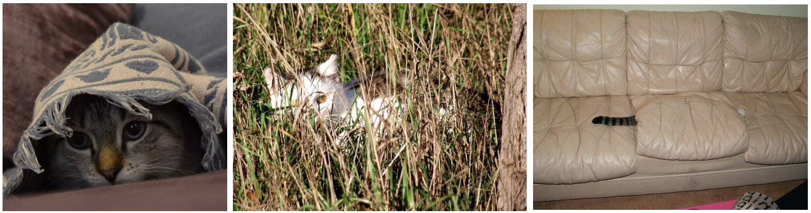
Intra-Class Variation
Objects of the same class can exhibit large intra-class variability.

Context Dependence
Figure 28 shows that context information can be important to correctly classify an object.
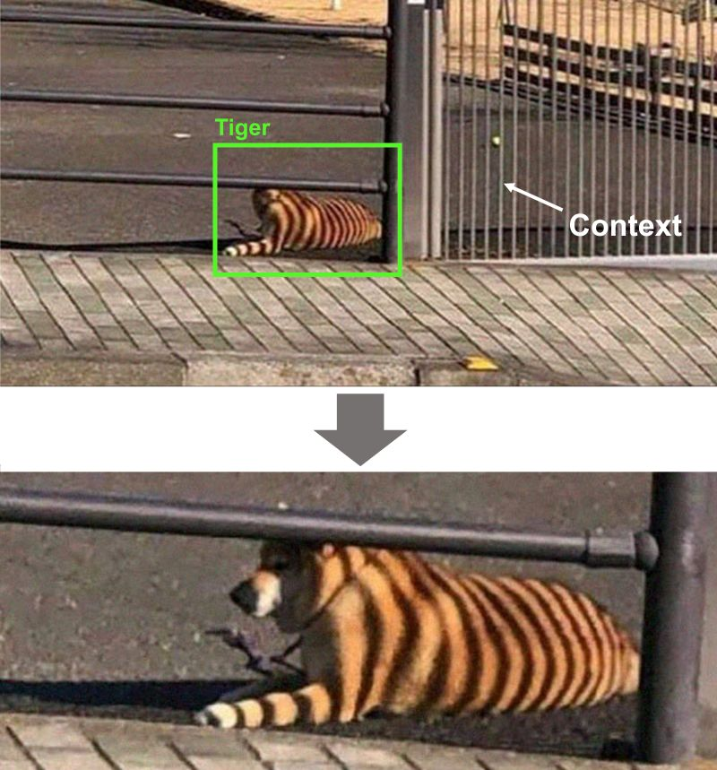
Software
Pipelines
Various models can also be combined into pipelines. One example is Grounded-Segment-Anything, shown in Figure 29. Object detection models that process text queries are used to detect objects. These detections are used by a segmentation model to segment the target object. This segmentation is then used in a text-to-image model to make the desired change at the correct location.

Image Analysis Libraries
There are numerous open-source libraries that provide pre-trained models to handle the tasks mentioned above. Therefore, you do not always have to train a model yourself. Figure 30 shows the capabilities of Detectron 2, an object detection library from Facebook, which can also be used for other tasks like segmentation.

Hugging Face is also well-known. It offers numerous models and datasets for various computer vision questions like object detection, segmentation, and classification.
Machine Learning
We follow a data-driven approach in machine learning to solve various tasks. Typically, the process involves:
- Collecting a dataset of images and their labels.
- Using a machine learning algorithm to train a model that learns to associate images with labels.
- Evaluating/applying the model on new data.
Question
How would you train a model for super resolution? The task of the model would be to scale low-resolution images to high-resolution images with the best possible quality.
Machine Learning Process
When modeling data, one often follows certain process steps: acquiring data, preparing it, training multiple models, selecting the most suitable model, estimating its future performance, and finally deploying it in production. Figure 31 illustrates this process graphically.

At the core of a machine learning application is typically a mathematical model, which is fitted to a dataset so that it can then be used for prediction (in supervised learning). We often refer to ‘models’, meaning the mathematical description of the dataset.
Models
A model is typically described as a function of a data point, generating an output \(\hat{y}\):
\[\begin{align*} f(\mathbf{x}^{(i)}) = \hat{y}^{(i)} \end{align*}\]
Most models have parameters or coefficients that describe the model. The entirety of all parameters is denoted by \(\theta\).
\[\begin{align*} f_{\theta}(\mathbf{x}^{(i)}) \text{ or } f(\theta, \mathbf{x}^{(i)}) \end{align*}\]
For simplicity, we often omit \(\theta\): \(f(\mathbf{x}^{(i)})\)
Optimization
The coefficients are fitted to a training dataset through an optimization procedure.
The optimization procedure can often be influenced by additional factors, called hyperparameters (\(\alpha, \lambda, \dots\)). These cannot be directly optimized.
The function/quantity to be optimized is usually called the cost function, i.e., cost function (other terms include objective function, loss function, etc.). We use \(J(\cdot)\) to denote the cost function. Often, the cost function is also referred to as the loss function \(L(\cdot)\). We use \(l(\cdot)\) for the per-sample loss, i.e., the computation of the cost function on a single sample.
Our goal is to find a model (and its parameters) that minimizes the cost function:
\[\begin{equation*} \mathsf{argmin}_{\theta, \lambda} J\Big(f_{\theta, \lambda}(\mathbf{X}), \mathbf{y}\Big) \end{equation*}\]
Usually, preprocessing of variables precedes the learning of
the coefficients. Forms of preprocessing include standardizing, normalizing, feature encoding, dimensionality reduction, and more. This preprocessing also affects the optimization procedure and can be considered hyperparameters.
Model Selection
Model selection is one of the most important and complex components of the machine learning process. This step involves comparing multiple models and selecting the “best” model for the task to be modeled. Which model is the “best” must be defined based on a metric that measures the model’s performance.
If we calculate the value of the metric on the training dataset, our model is usually too optimistic about its general performance. This is because the data points in the training dataset were directly used to optimize the cost function, and the model coefficients are thus optimally adjusted to them. New data points, for which predictions are to be made, could not have been used for optimization. Therefore, a dataset is usually divided into a training set and a test set. The model is trained with the training set and its performance is measured on the test set. When comparing many models, it is advisable to compare them on a separate validation set (see Figure 32) and evaluate only the best model on the test set. This makes the estimate on the test set more accurate.
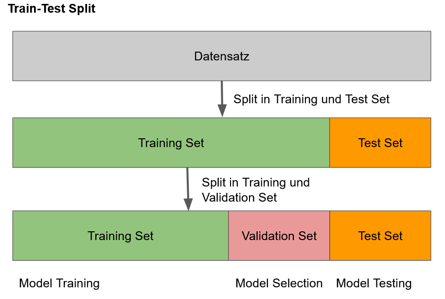
ML with Classical Computer Vision
Images typically have very high dimensionality. For example, an RGB image with a resolution of \(800 \times 600\) has a dimensionality of \(800 \times 600 \times 3 = 1,440,000\). Classical machine learning algorithms often struggle with such high dimensionalities:
- They are very slow or require a lot of memory.
- They cannot exploit the 2-D structure of images.
- They are very sensitive to slight changes in images (e.g., rotations).
- They can easily overfit, as the number of features is close to the number of observations (training set).
When modeling images with (classical) machine learning algorithms, methods from (classical) computer vision are often used. With the help of such methods, features can be extracted from images, and the algorithms can learn on these features. This avoids modeling high-dimensional raw data. Figure 33, Figure 34, and Figure 35 show various feature extraction methods.
Figure 33 shows that, for example, the distribution over the color spectrum can be extracted from an image. This could be an important feature.
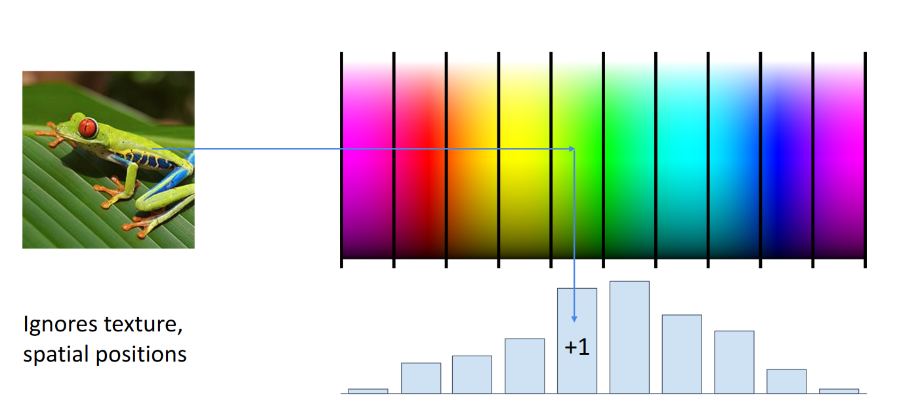
Figure 34 shows that techniques like Histogram of Oriented Gradients (HOG) Dalal and Triggs (2005) can be used to extract structures from images. Such features were successfully used for pedestrian detection Dalal and Triggs (2005).
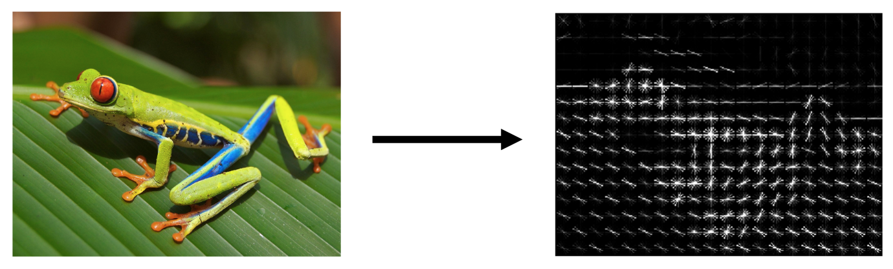
Figure 35 shows another feature variant. Visual patches can be extracted from a dataset, clustered, and then used as descriptors.

Finally, all features can be combined, often more is better, as shown in Figure 36.

Depending on the parameterization, HOG descriptors, for example, can be very large for images. The resulting feature vector from Figure 36 can still be reduced in dimensionality, e.g., with Principal Component Analysis.
Figure 37 shows the CIFAR10 dataset. A well-known dataset for testing models, consisting of 10 classes with 6,000 images each.

Deep Learning
To accelerate research in computer vision and make progress more measurable, the PASCAL VOC Challenges were introduced Everingham et al. (2007). These involved various tasks, such as detecting objects in photographs (Figure 38).
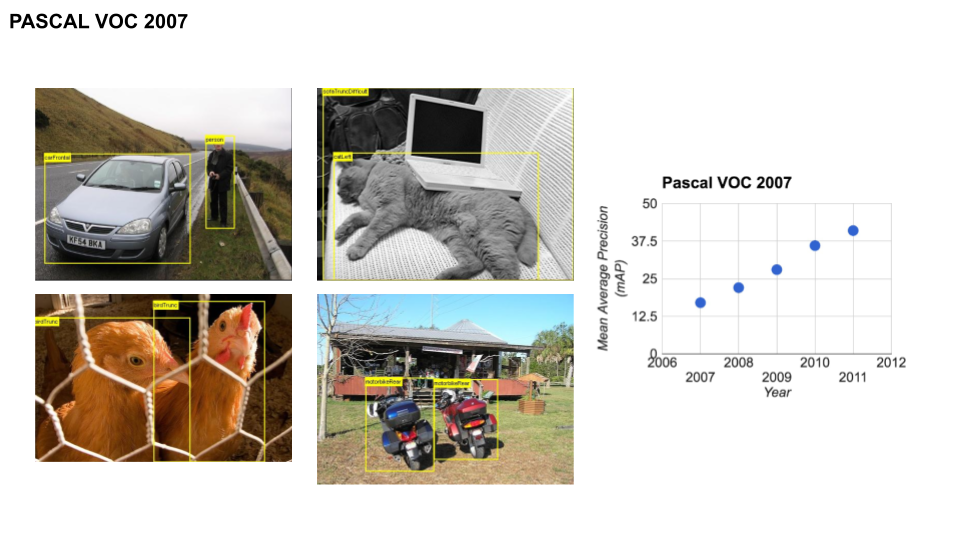
The easy availability of images on the internet has made it possible to collect increasingly larger datasets. ImageNet is such a very large, hierarchically annotated image dataset Deng et al. (2009) with over 1.4 million images, categorized into 1,000 object classes. Figure 39 illustrates the dataset.

{kind=link}
Since 2010, challenges have been regularly conducted on the ImageNet dataset Russakovsky et al. (2015), such as image classification and object detection. Figure 40 shows the development of the error rate over time.
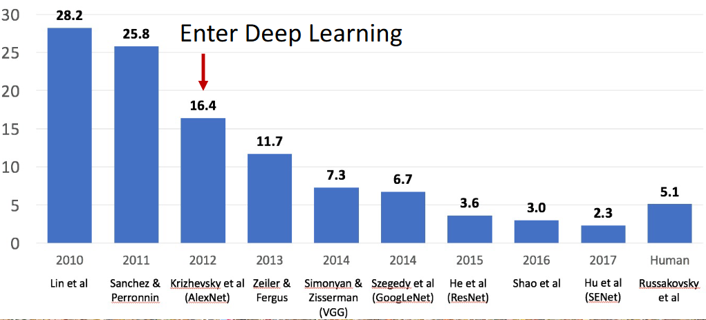
In 2011, a team won Perronnin et al. (2010) by combining various (classical) feature extraction methods with machine learning. They used, among other things, SIFT features to train SVMs.
In 2012, a drastic reduction in the error rate was achieved in the ImageNet competition. This development marked the end of classical computer vision methods in many areas. Krizhevsky et al. Krizhevsky, Sutskever, and Hinton (2012) impressively demonstrated the potential of neural networks in 2012. They implemented a convolutional neural network (CNN) with multiple layers, the so-called AlexNet architecture, as shown in Figure 41.

While classical computer vision trains a machine learning model on features extracted with hand-crafted algorithms Figure 42, the development is increasingly moving towards end-to-end learning. In this approach, one avoids as much as possible static/hand-designed components and learns everything, including feature extraction, with machine learning Figure 43.


Deep learning-based approaches have several advantages over classical machine learning methods:
- Automatic feature extraction: no manual feature extraction procedures are needed.
- Hierarchical features: these are particularly valuable for processing and understanding visual data.
- Generalization: with more training data, deep learning methods generalize better.
- End-to-end learning: this approach allows many problems to be modeled similarly.
- Robustness to variability: certain models are naturally invariant to
transformations like translations, scalings, etc. - Adaptability and transferability: deep learning models can often be easily adapted (transfer learning) and can create good models even with little data.
Deep Learning History
We will now explore the most important milestones in deep learning for image analysis.
Hubel and Wiesel
Hubel and Wiesel (1959) showed in experiments on cats that there are complex cells/neurons in the visual cortex that only respond to certain patterns. In addition to these complex cells, there are also simple cells that only respond to lines at a certain angle.
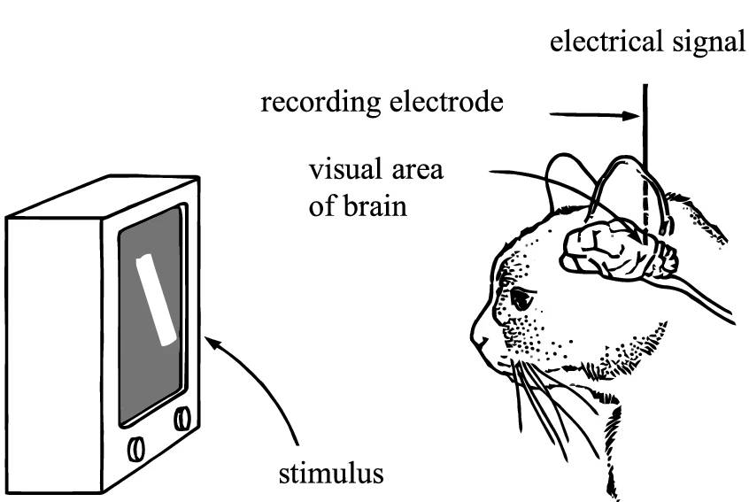
Neocognitron
Fukushima (1980) defined a model of a neural network that can recognize visual patterns. It already has the hierarchical structure of a modern convolutional neural network and is inspired by biological neural networks, particularly from the insights of Hubel and Wiesel (1959).
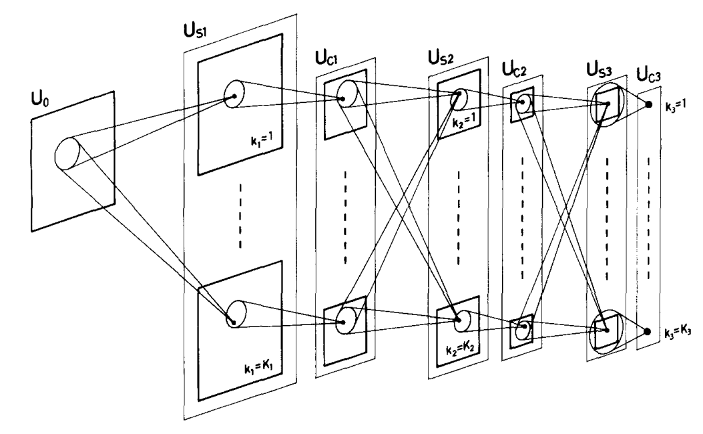
Backpropagation
Rumelhart, Hinton, and Williams (1986) introduced the backpropagation algorithm in the context of neural networks. This algorithm is used to train modern neural networks: it finds the parameters of an artificial neural network (ANN) to solve a specific task. Backpropagation is based on the chain rule from calculus and is also important for other machine learning models.
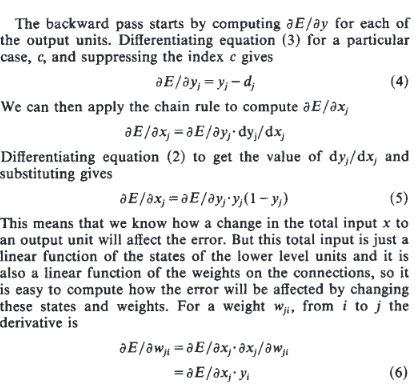
Tip
A good video on backpropagation: 3Blue1Brown Backpropagation Calculus
Convolutional Neural Networks (CNNs)
Lecun et al. (1998) implemented convolutional neural networks (CNNs) to recognize handwritten digits. It is specialized for the 2-D structure of the input data. They trained a model very similar to modern CNNs, as shown in Figure 47.
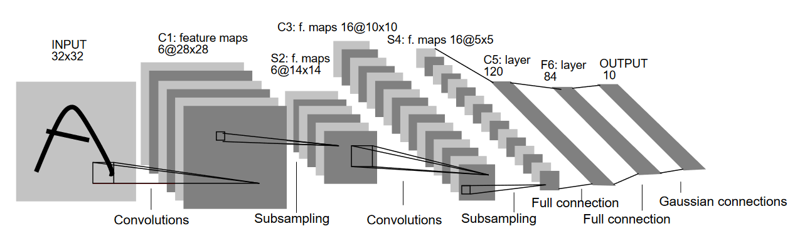
CNNs became extremely popular after winning the ImageNet competition. Krizhevsky, Sutskever, and Hinton (2012) implemented a CNN with multiple layers, the so-called AlexNet architecture, as shown in Figure 48.
Since the breakthrough in 2012, CNNs have been used for increasingly complex tasks and further developed. Well-known are, for example, the COCO Challenges, with various tasks.
Other Architectures in Computer Vision
CNNs are still in use today (2024). Meanwhile, there are alternative architectures, such as transformer-based models (Dosovitskiy et al. (2020)), which are extremely successful in language modeling, or multilayer perceptron-based architectures (Liu et al. (2021)). However, it has been shown that CNNs are still competitive and sometimes superior to alternative architectures (see Woo et al. (2023)). The question of which architecture type will prevail is open. Currently, it seems that CNNs and transformer-based models perform similarily (Smith et al. (2023)).
References
Breitenmoser-Würsten, Christine, Fridolin Zimmermann, Kristina Vogt, Manuela von Arx, Sven Signe, and Christian Stauffer. 2024. “Das Projekt LUNO - Abschlussbericht.” 121. Stiftung KORA. https://portal.issn.org/#.
Dalal, N., and B. Triggs. 2005. “Histograms of Oriented Gradients for Human Detection.” In 2005 IEEE Computer Society Conference on Computer Vision and Pattern Recognition (CVPR’05), 1:886–93. San Diego, CA, USA: IEEE. https://doi.org/10.1109/CVPR.2005.177.
Deng, Jia, Wei Dong, Richard Socher, Li-Jia Li, Kai Li, and Li Fei-Fei. 2009. “ImageNet: A Large-Scale Hierarchical Image Database.” In 2009 IEEE Conference on Computer Vision and Pattern Recognition, 248–55. Miami, FL: IEEE. https://doi.org/10.1109/CVPR.2009.5206848.
Dosovitskiy, Alexey, Lucas Beyer, Alexander Kolesnikov, Dirk Weissenborn, Xiaohua Zhai, Thomas Unterthiner, Mostafa Dehghani, et al. 2020. “An Image Is Worth 16x16 Words: Transformers for Image Recognition at Scale.” arXiv:2010.11929 [Cs], October. http://arxiv.org/abs/2010.11929.
Everingham, M., L. Van Gool, C. K. I. Williams, J. Winn, and A. Zisserman. 2007. “The PASCAL Visual Object Classes Challenge 2007 (VOC2007) Results.” http://www.pascal-network.org/challenges/VOC/voc2007/workshop/index.html.
Fukushima, Kunihiko. 1980. “Neocognitron: A Self-Organizing Neural Network Model for a Mechanism of Pattern Recognition Unaffected by Shift in Position.” Biological Cybernetics 36 (4): 193–202. https://doi.org/10.1007/BF00344251.
Häni, Nicolai, Pravakar Roy, and Volkan Isler. 2020. “MinneApple: A Benchmark Dataset for Apple Detection and Segmentation.” IEEE Robotics and Automation Letters 5 (2): 852–58. https://doi.org/10.1109/LRA.2020.2965061.
He, Kaiming, Georgia Gkioxari, Piotr Dollár, and Ross Girshick. 2018. “Mask R-CNN.” arXiv. http://arxiv.org/abs/1703.06870.
Hubel, D. H., and T. N. Wiesel. 1959. “Receptive Fields of Single Neurones in the Cat’s Striate Cortex.” The Journal of Physiology 148 (3): 574–91. https://doi.org/10.1113/jphysiol.1959.sp006308.
Isola, Phillip, Jun-Yan Zhu, Tinghui Zhou, and Alexei A. Efros. 2018. “Image-to-Image Translation with Conditional Adversarial Networks.” arXiv. http://arxiv.org/abs/1611.07004.
Johnson, Justin. 2022. “EECS 498.008 / 598.008 Deep Learning for Computer Vision.” Lecture {Notes} / {Slides}. https://web.eecs.umich.edu/~justincj/teaching/eecs498/WI2022/.
Karras, Tero, Miika Aittala, Samuli Laine, Erik Härkönen, Janne Hellsten, Jaakko Lehtinen, and Timo Aila. 2021. “Alias-Free Generative Adversarial Networks.” arXiv. http://arxiv.org/abs/2106.12423.
Krizhevsky, Alex, Ilya Sutskever, and Geoffrey E Hinton. 2012. “ImageNet Classification with Deep Convolutional Neural Networks.” In Advances in Neural Information Processing Systems, edited by F. Pereira, C. J. Burges, L. Bottou, and K. Q. Weinberger. Vol. 25. Curran Associates, Inc. https://proceedings.neurips.cc/paper/2012/file/c399862d3b9d6b76c8436e924a68c45b-Paper.pdf.
Lecun, Y., L. Bottou, Y. Bengio, and P. Haffner. 1998. “Gradient-Based Learning Applied to Document Recognition.” Proceedings of the IEEE 86 (11): 2278–2324. https://doi.org/10.1109/5.726791.
Liu, Hanxiao, Zihang Dai, David R. So, and Quoc V. Le. 2021. “Pay Attention to MLPs.” arXiv:2105.08050 [Cs], June. http://arxiv.org/abs/2105.08050.
Ma, Jun, Yuting He, Feifei Li, Lin Han, Chenyu You, and Bo Wang. 2024. “Segment Anything in Medical Images.” Nature Communications 15 (1): 654. https://doi.org/10.1038/s41467-024-44824-z.
Mildenhall, Ben, Pratul P. Srinivasan, Matthew Tancik, Jonathan T. Barron, Ravi Ramamoorthi, and Ren Ng. 2020. “NeRF: Representing Scenes as Neural Radiance Fields for View Synthesis.” arXiv. http://arxiv.org/abs/2003.08934.
Pan, Xingang, Ayush Tewari, Thomas Leimkühler, Lingjie Liu, Abhimitra Meka, and Christian Theobalt. 2023. “Drag Your GAN: Interactive Point-Based Manipulation on the Generative Image Manifold.” arXiv. http://arxiv.org/abs/2305.10973.
Perronnin, Florent, Yan Liu, Jorge Sanchez, and Herve Poirier. 2010. “Large-Scale Image Retrieval with Compressed Fisher Vectors.” In 2010 IEEE Computer Society Conference on Computer Vision and Pattern Recognition, 3384–91. San Francisco, CA, USA: IEEE. https://doi.org/10.1109/CVPR.2010.5540009.
Raschka, Sebastian, and Vahid Mirjalili. 2020. Python Machine Learning: Machine Learning and Deep Learning with Python, Scikit-Learn, and TensorFlow. Second edition, fourth release,[fully revised and updated]. Expert Insight. Birmingham Mumbai: Packt Publishing.
Redmon, Joseph, Santosh Divvala, Ross Girshick, and Ali Farhadi. 2016. “You Only Look Once: Unified, Real-Time Object Detection.” Proceedings of the IEEE Computer Society Conference on Computer Vision and Pattern Recognition 2016-Decem: 779–88. https://doi.org/10.1109/CVPR.2016.91.
Rombach, Robin, Andreas Blattmann, Dominik Lorenz, Patrick Esser, and Björn Ommer. 2022. “High-Resolution Image Synthesis with Latent Diffusion Models.” arXiv. http://arxiv.org/abs/2112.10752.
Rumelhart, David E., Geoffrey E. Hinton, and Ronald J. Williams. 1986. “Learning Representations by Back-Propagating Errors.” Nature 323 (6088): 533–36. https://doi.org/10.1038/323533a0.
Russakovsky, Olga, Jia Deng, Hao Su, Jonathan Krause, Sanjeev Satheesh, Sean Ma, Zhiheng Huang, et al. 2015. “ImageNet Large Scale Visual Recognition Challenge.” arXiv. http://arxiv.org/abs/1409.0575.
Smith, Samuel L., Andrew Brock, Leonard Berrada, and Soham De. 2023. “ConvNets Match Vision Transformers at Scale.” arXiv. http://arxiv.org/abs/2310.16764.
Woo, Sanghyun, Shoubhik Debnath, Ronghang Hu, Xinlei Chen, Zhuang Liu, In So Kweon, and Saining Xie. 2023. “ConvNeXt V2: Co-Designing and Scaling ConvNets with Masked Autoencoders.” arXiv. http://arxiv.org/abs/2301.00808.